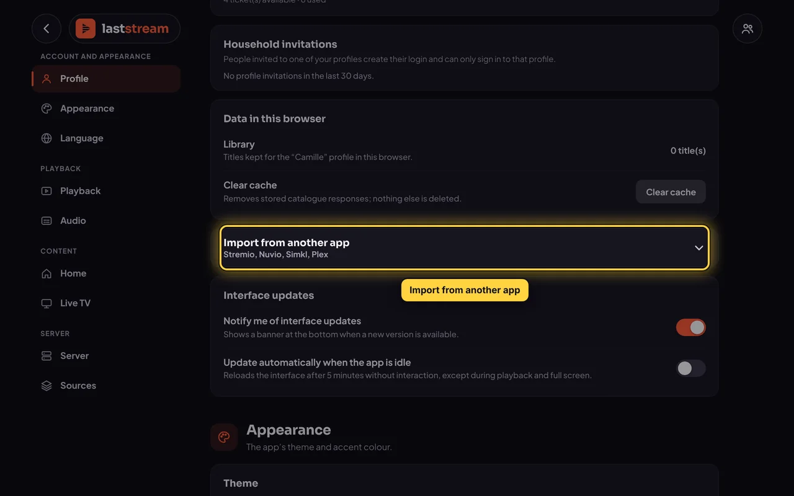
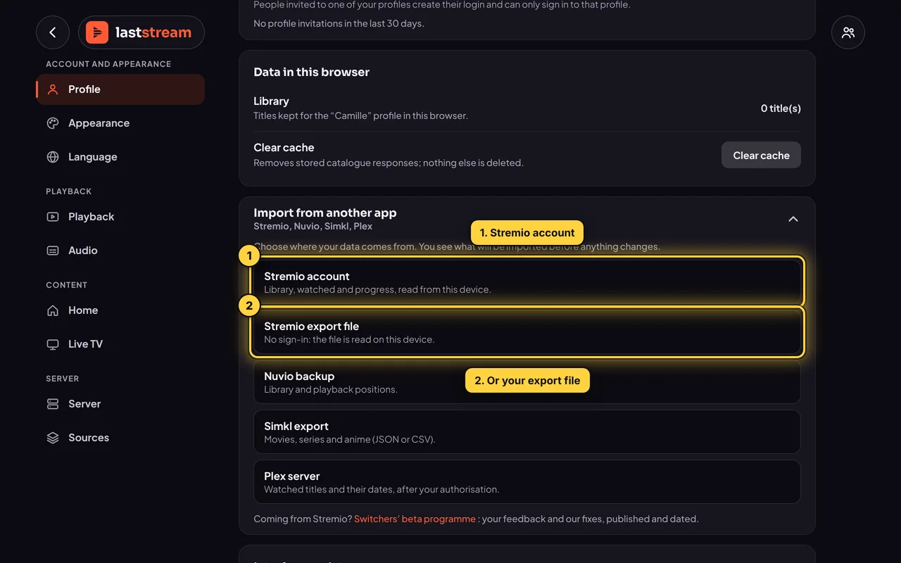
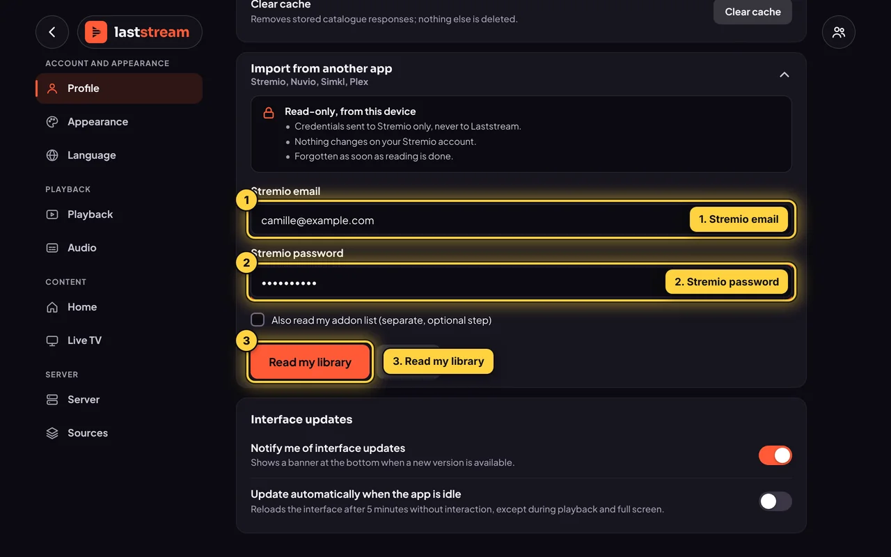
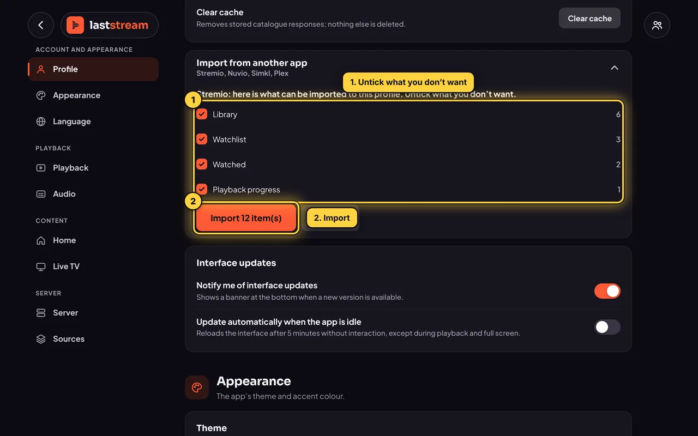
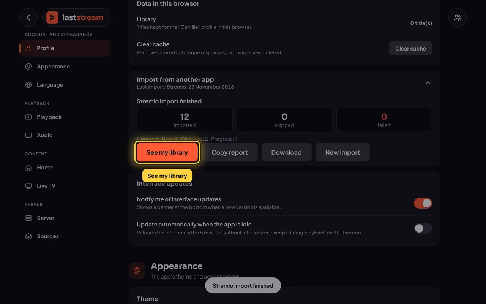
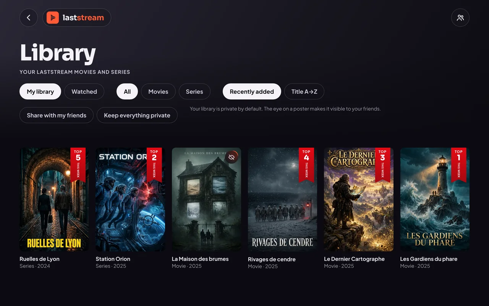

Before you start
- Your Stremio email and password, or a Stremio export file.
- The Laststream profile that should get the titles, open.
Steps
On each screenshot, the yellow frame shows where to tap or click; the numbers give the order. The app is in French: the screenshots show its English translation.
-
Open “Settings”, “Profile” category, and scroll down to “Import from another app”.

-
Pick “Stremio account” (1). Without signing in to your account, “Stremio export file” (2) reads a file on this device.

-
Read the notice, then tap “Got it, continue”.
Type your Stremio email (1) and password (2), then “Read my library” (3).

-
Laststream shows what can be imported: “Library”, “Watchlist”, “Watched”, “Playback progress”. Untick what you don’t want (1), then “Import” (2).

-
At the end, the summary gives the items imported, skipped and failed. Tap “See my library”.

-
Your Stremio titles are in your library, with their watched state and progress.
